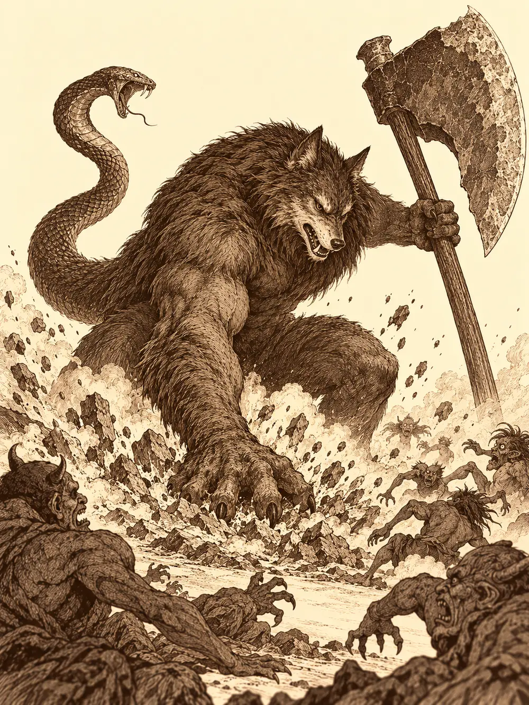

Capítulo 167
Tercera oleada
Libro X · Hasta pronto, Kuroto
El campamento del sur hervía. Los soldados salían de las tiendas abrochándose las corazas con los dedos torpes, y en sus caras había más miedo que ganas. Las campanas de las torres seguían sonando a lo lejos. Serafina e Ikari cruzaron el portal juntos, y el tanuki se quedó mirando a los tritones de guardia con la boca abierta.
"¿Qué son esos pulpos?".
"Es una larga historia. Luego te la cuento".
Ikari llevaba un ropaje nuevo de los cazadores que lucía con orgullo, una cinta roja atada a la frente y, colgando del bastón, un hilo con papeles que llevaban nombres escritos. No le había contado a casi nadie que llevaba tiempo excavando túneles bajo su taberna, ni que sus primos rondaban la ciudad haciéndose pasar por mendigos para escuchar y para dar refugio a quien lo necesitara. Antes de salir hacia el sur se había despedido de todos, por si acaso.
Junto a las tiendas de los generales estaban Jin, Calista y Gelbreak, inclinados sobre un mapa. Banzo había llegado poco antes, cubierto de vendas mal puestas, con el cuello todavía marcado del corte de la víspera. Se colocaba el yelmo y las piezas de una armadura nueva. Por la puerta del campamento apareció Kurobane, con la ropa hecha jirones, un zarpazo en el costado y una capa roja con el símbolo de su orden sobre los hombros. Llevaba horas peleando.
Banzo se quedó mirándolo. Los que estaban cerca notaron que el aire alrededor del goliat empezaba a temblar como sobre un camino en verano. Calista no lo miró. Le dio la espalda y se fue a hablar con Jin, y por donde pasaba se notaba frío.
"Están siendo demasiado organizados", decía Jin. "Cada vez que preparamos una emboscada, aparecen por otro sitio. Es como si supieran por dónde vamos a ir".
"Posiblemente haya un espía", dijo Calista. "Pero ahora es tarde para buscarlo".
"Había uno", dijo Kurobane al llegar. "Estaba en el último templo que vencimos".
Nadie dijo quién. El calor de Banzo se hizo tan intenso que alguien se apartó.
El goliat cruzó el campamento con el hacha en la mano y se lanzó contra el ninja con dos tajos en diagonal. Kurobane dio un paso de lado. De su sombra brotaron dos copias que sujetaron al goliat por los brazos.
"No estoy de humor, Banzo".
Desde fuera, los demás vieron otra cosa. Vieron a los dos quietos, con los ojos cerrados, a varios pasos de distancia, sin moverse un ápice. La pelea ocurría en otro lugar.
Allí dentro, Banzo saltó con el hacha en alto y las dos sombras le clavaron sus estoques en el pecho.
"No quería hacerlo", dijo Kurobane. "Medidas desesperadas. Por eso tuve que entrar en palacio. Por eso tuve que decirle a Danifae dónde estaban las esferas. Necesitaba saber lo de la cúpula. Que ahora protege a los demonios".
Banzo se miró las dos hojas que le atravesaban el pecho y sonrió.
"Exacto. Decisiones desesperadas para momentos desesperados".
Se echó hacia atrás y le cortó el cuello de un tajo lateral.
Los dos abrieron los ojos a la vez. Del pecho del goliat salieron dos hilos de sangre. En el cuello de Kurobane, las sombras dibujaron una línea oscura, como un tatuaje, donde debería haber estado la herida. Se acercaron. Banzo le cogió el antebrazo y lo atrajo hacia sí.
"Espalda con espalda. Te voy a cubrir. Espero que sepas lo que has hecho".
"Siempre vivo con el caos a la espalda", le susurró el ninja. "Y siempre estaré dispuesto a enmendar mi error".
Los demás solo vieron un abrazo brusco. Calista lo miró de reojo y entendió lo único que podía entender: que el goliat había perdonado al chico por lo de antes, y que con ella no había hablado de nada. Las aletas se le levantaron como lanzas. Jin le puso la mano en el hombro y le dijo que todo saldría bien. Ella le devolvió la palmada sin haberle oído.
Antes de salir, la shogun alzó la voz ante los soldados. Les pidió que aguantaran la oleada todo lo que pudieran, que contaba con todos, que no quería lamentar ni una muerte más. Su voz llegó a cada rincón del campamento, y los hombres sintieron que se les endurecía la piel y se les calentaba la sangre. Al pasar junto a Banzo le lanzó una mirada como una esquirla de hielo. Al pasar junto a Ikari, le tocó el hombro con suavidad.
Mientras bajaban hacia la Puerta Negra, Gelbreak se acercó a Banzo y le dio un codazo.
"Deberías hablar con Calista. Está muy enfadada contigo desde que hiciste el trato con mi hermana".
"¿Y por qué crees que lo hice?".
"Porque eres un goliat bastante loco".
"Es la única manera que tengo de protegeros a los dos. Un pacto con una doncella: mi vida por la suya. Ella actuaría con temeridad, y yo no tengo nada que perder. Pero ayer descubrí que me equivoqué. Otra vez".
Gelbreak no le dijo que se lo había advertido. Se paró, esperó a la shogun y le dijo que Banzo quería hablar con ella.
"Así que hablar conmigo".
Banzo le explicó lo mismo. Que Danifae ganaría la partida contra él, y que lo que pretendía era que no la ganara contra ellos. Que encerrada o suelta daba igual, porque nunca había estado encerrada de verdad. Que con prisa cometería errores. Que llegaría el momento en que Calista y Gelbreak tendrían que elegir entre el trono y la libertad, y que si alguien tenía que quedarse a dar la cara, se quedaría él.
"Cuando quede libre, voy a abandonar el trono y formar un consejo de guerra. Ya lo dije. Pero hasta entonces, Danifae suelta es un problema para todo el mundo".
"¿Qué te dice tu corazón?".
"Que la única forma de protegernos es que esté muerta. Ojalá la hubiera matado hace mucho. No sé qué miedo le tiene Gelbreak a su propia hermana, pero cada vez que quise cortarle la cabeza me convenció para que no lo hiciera. Y el día que lo intenté, salió muy mal".
"Entonces el error no lo he cometido solo yo".
"¿Y por qué no se te ocurrió contárnoslo?".
"Soy un goliat. Lo único que sé hacer es proteger a los míos. Me equivoco casi siempre, pero siempre para protegeros".
La conversación quedó a medias. Habían llegado a la colina, y abajo la batalla ya había empezado.
Los soldados del shogunato peleaban contra hombres pájaro, aarakocra podridos por la plaga de Otakemaru, y contra demonios menores que los veteranos ya conocían. A los cazadores les tocó un tramo de terreno escarpado frente a la misma puerta. Los demonios se reunieron a su alrededor sonriendo.
Banzo entró en furia y los espíritus que lo rodeaban cubrieron a los que estaban cerca con una piel que rechazaba los golpes. Calista se multiplicó en reflejos y se puso a bailar. Kurobane se quedó quieto junto a su copia, esperando a que alguien se acercara. Serafina saltó a por un hombre pájaro y le dio un puñetazo que lo hizo chillar.
Entonces habló la puerta. De entre sus hojas salió un miasma que vibraba, y aquel sonido les llenó la cabeza de visiones de demonios por todas partes. Ninguno consiguió sacudírselas del todo. Se les entumecían los reflejos. Cada uno tenía que elegir, a cada momento, qué parte de sí mismo usar, porque no le alcanzaba para todo. Y la misma puerta hería a los vivos y curaba a los demonios.
Unas mujeres arácnidas subidas a las rocas escupieron telarañas sobre Jin, Ikari y Kurobane. Otra miró a Banzo y le ordenó que se estuviera quieto, y el goliat se quedó paralizado mientras los hombres pájaro le picoteaban sin que pudiera levantar un brazo. Jin rompió la tela que lo sujetaba con la fuerza de los hombros. Serafina se movía entre los enemigos golpeando y saltando atrás. Kurobane aparecía y desaparecía entre su cuerpo y sus sombras. Calista e Ikari curaban y lanzaban magia. Gelbreak soltó un grito que se oía dentro de la cabeza, y los demonios que lo recibieron se quedaron aturdidos o cayeron deshechos.
Dos nue, criaturas de tormenta, levantaron sobre el campo zonas de rayos que no se apagaban aunque las paralizaran a ellas; aquello formaba parte de su naturaleza y no se rompía como un hechizo. Cuando Banzo pudo volver a moverse, gritó a Jin para que se colocara mejor, empujó a uno de los grandes enemigos hacia el borde del precipicio y lo acompañó en la caída con un último golpe. Después soltó a todos sus espíritus de golpe contra otro demonio. La descarga lo dejó vacío y agotado.
Fue entonces cuando bajó el general.
Cayó del cielo con un estruendo que hizo callar a los demás demonios. Era enorme, con una cabeza de lobo, un hacha gigantesca en las manos y una cola rematada en serpiente. Los demonios menores se apartaron con respeto.
Fue derecho a por Banzo. El primer hachazo lo tumbó. Luego le dio una dentellada con la cabeza de lobo, y la cola de serpiente le mordió y le dejó una herida negra que no era como las otras: le quitaba algo más que sangre, algo que no volvería solo. Kurobane fue el siguiente. Cayó, se levantó, volvió a caer. Ikari intentó frenar la magia del general y el general lo convirtió en rana; el tanuki estuvo croando hasta que el propio daño de la puerta deshizo el hechizo.
Calista levantó a Banzo. Serafina le metió una poción en la boca a Kurobane. Jin mató a una de las últimas criaturas menores que quedaban cerca, y en ese instante sus sandalias soltaron una oleada de curación que alcanzó a los aliados. Los dos caídos volvieron a ponerse de pie. Calista se plantó delante del general.
"¿Por qué no vas a pegarte con alguien igual de feo que tú?".

Ikari aceleró a Banzo y a Kurobane a la vez. Kurobane soltó la habilidad de su arma, hizo que su copia golpeara cada vez que él golpeaba y se lanzó. Uno, dos, tres, cuatro, la sombra detrás de cada uno, hasta que un último golpe, perfecto, atravesó al general. El demonio desapareció.
Kurobane cayó de rodillas.
Al ver caer a su general, la oleada empezó a retroceder. Los soldados del shogunato, que lo habían visto desde lejos, gritaron y cargaron con fuerzas nuevas, y los demonios se retiraron más allá de la puerta. La Puerta Negra se quedó abierta de par en par. Y sobre las tierras del otro lado, la cúpula que antes protegía a Kuroto protegía ahora al enemigo.
Kurobane estaba deshecho. Le faltaba piel en el costado, apenas podía caminar, y su cuerpo no iba a recuperarse con una cura corriente. Calista se acercó a Banzo, que parecía hecho de sangre, y lo curó. El goliat le dio las gracias y le preguntó quién vigilaba palacio.
"Ayer perdí de vista a Danifae. Si tú y Gelbreak estáis aquí, palacio está descubierto".
Calista miró a Gelbreak. Él no tenía ya magia para llevarlos de un salto, así que la agarró de la mano y echaron a correr.
Jin se acercó al lugar donde había caído el general. El hacha seguía allí, clavada en el suelo, ardiendo. La tocó. El arma empezó a retorcerse, a encogerse, hasta convertirse en un mandoble. Al empuñarlo, Jin sintió que le ardía el pecho, un fuego que no dolía, que lo llenaba. La sangre le corría hacia la hoja y la hoja se encendía. Salió corriendo detrás de los demonios en retirada.
Serafina se cargó a Kurobane a la espalda. Volvieron al campamento pensando que tendrían que visitar otra vez a los guardianes.
En el campamento, mientras buscaba vendas, Serafina le reprochó al ninja que se hubiera arriesgado tanto. Él le dijo que tendría que haber muerto. Que había hecho algo por lo que podían matarlo. Se acercó a su oído.
"He traicionado a la shogun. Por mi culpa Danifae tiene las esferas".
Serafina se quedó callada un rato. Luego le contestó que otros también habían hecho cosas que podían enfrentarlos a Calista, y le prometió no contar nada, igual que él había guardado un secreto suyo. Las quemaduras del chico empeoraban, y ella no podía curarlas. Lo cubrió con las capas de los dos para protegerlo de la lluvia y lo llevó por el portal hasta el taller de Guxi en Sho.
Guxi lo tumbó en una camilla y lo curó como pudo. Al desnudarlo para vendarle se le cayó un guante, y en uno de los dedos apareció un anillo oscuro. Serafina lo vio. Guxi le dijo que las preguntas, después. Cuando Kurobane despertó, cubrió el anillo enseguida e insistió en volver al frente. Serafina lo amenazó con avisar a Calista si se marchaba esa noche. Él se quedó, pero se sintió traicionado: había usado su secreto contra él.
Calista y Gelbreak llegaron a palacio sin aliento. La puerta del tesoro estaba abierta. El cofre de las cadenas estaba abierto, las cadenas en el suelo, y todo lo demás en su sitio. Gelbreak examinó los candados y vio marcas pequeñas: los habían forzado dos veces. Calista lanzó el cofre contra la pared con una ráfaga de viento.
"Es la segunda vez que nos las roban".
"Todavía tenemos una. Y la niña tiene otra. Si las tiene mi hermana, las recuperaremos". Gelbreak arrugó la cara. "Pero dos veces... Solo conozco a otra persona que haría esto. Tiari".
Él fue a ver a Tiari. Ella fue a ver a Banzo.
El goliat descansaba en una tienda del campamento. Calista entró como un vendaval y lo despertó al tumbar una pata del catre. Banzo le contó que la esfera que se había tragado Arwen había estado a punto de matarla y que había mandado a Zogia a avisar. Calista le dijo que la niña vivía, pero que también habían desaparecido las esferas de palacio. Si Danifae tenía ya tres, no podría volver a atraparla. Banzo intentó tranquilizarla: la última iba a ser muy difícil de conseguir. Ella le recordó que la drow podía tocarlas sin quemarse y que él le había dado la libertad.
Banzo la abrazó, la hizo sentarse y le recordó una promesa antigua sobre el futuro. Luego empezó a contarle algo en lo que llevaba trabajando meses. Lo que se dijeron allí dentro no salió de la tienda. Calista salió todavía bufando por una broma del goliat, pero salieron juntos, con algunos secretos compartidos y un pacto de amistad renovado.
Esa misma noche, Kurobane se presentó en el despacho de la shogun. Le dijo que sabía que alguien se había colado en palacio. Lo sabía porque el primero en colarse había sido él.
Calista se levantó, lo agarró de la camisa y le exigió las esferas. Él le dijo que seguramente las tenía Danifae, y le tendió el diario hallado bajo el banco: el de Sakura, la sacerdotisa cultista. En él estaba escrito cómo los cultistas habían recorrido los cuatro templos para pactar con los guardianes a favor de Otakemaru. Por eso la cúpula había cambiado de lado.
"Te has dejado engañar con una información que yo misma os di en la oleada".
"Estaba desesperado por ser útil fuera de los combates".
Calista le dijo que Banzo tenía razón, que seguía siendo fácil de manipular. Le arrancó el collar de cazador del cuello y lo expulsó. Kurobane salió en silencio hacia los barrios bajos.
Cuando Gelbreak volvió, Tiari había negado que los suyos tuvieran algo que ver. Encontró a Calista hundida y le contó lo del ninja. Él intentó animarla otra vez con lo de las dos esferas que les quedaban, y ella lo corrigió: la de la niña estaba matando a la niña, se la habían sacado y se la había llevado Danifae. Solo quedaba una. Gelbreak bajó la cabeza y le confesó que tenía miedo de no ser lo bastante fuerte contra su familia, contra el dragón, contra los dioses, que no iba a poder darle la vida que le había prometido. Calista lo abrazó. Le dijo que compartir la carga ya era ser fuerte, y que él era la razón por la que seguía adelante.
En el taller de Guxi, Kurobane le contó a Serafina que se lo había dicho todo a Calista y que ella le había quitado el collar. Cuando ella le preguntó por el anillo, no quiso contestar. Entonces apareció Banzo. El anillo era de las Cuchillas Negras, de Tiari, igual que el que había llevado Archi. Kurobane admitió que era informante de la organización. Habló de arreglar las cosas y marcharse; propuso incluso hacer de doble agente. Banzo le dijo que no. Que fuera con él a buscar a Sun Gukon para enmendar lo de la cúpula. Kurobane aceptó. Serafina dejó a R3 con Guxi y se fue con ellos.
Junto a su tienda, en el campamento, meditaba Tang Sanzan, el maestro del monje. Banzo se sentó frente a él e imitó su postura, y el viejo le dio un golpe en la cabeza con el cayado tan rápido que nadie lo vio. Kurobane lo intentó después y recibió el mismo golpe. A Serafina, que no imitó a nadie, la escuchó.
"No hay ningún Sun Gukon. El título de Sun está vacante". Suspiró. "Pero sé dónde está ese monje. Debajo de una montaña. Yo mismo lo metí ahí".
La fe con que Serafina habló de su compañero lo convenció. Le traspasó una energía que le recorrió los brazos y le pidió que acompañara al monje allí donde él no había sabido guiarlo. Luego volvió a dar un golpe al ninja, por si acaso, y le dijo a ella que se dejara guiar por la esperanza.
Serafina sintió la dirección en el pecho y los llevó al norte. Pasaron una noche junto al fuego que ablandó un poco a Kurobane. Al llegar, ella encontró en la roca una grieta del espíritu, invisible para los demás. Banzo intentó mover la montaña con los brazos y no pudo. Entonces Serafina cerró el puño, el goliat le puso la mano en la espalda, y el golpe abrió la roca. Debajo estaba el mono. Fingió amenazarlos, y luego reconoció a Banzo y se echó a reír, y se abrazaron.
"Soy la prometida de Guxi", le dijo Serafina antes de que pudiera abrir la boca.
Ya en Sho, el mono se abrazó a Sirth y le pidió perdón. El clérigo lo recibió sin un reproche. Arwen se recuperaba; Ukio había sido evacuada. Cuando le preguntaron cómo se había roto la cúpula la primera vez, contó que para empuñar el báculo de Tang se quitó los guantes de Byakko sin saber lo que hacía, y una bendición se deshizo. Banzo se preguntó en voz alta si la protección de ahora también dependería de objetos que llevara el enemigo.
Arwen paseaba por la ciudad con Shizuka y una bolsa de caramelos. Ya estaba mejor. Pero no dejaba de pensar en Chilia, y Sirth no la dejaba acercarse al portal del bosque.
"Sirth es un cabeza hueca", decía Shizuka. "Ya iremos nosotras a buscarla".
"Oh, qué bonito".
Danifae estaba apoyada en una pared, con una caja envuelta en una cinta.
"¿Te acuerdas de la sorpresa que estaba preparando para nuestros amigos? Te voy a dar este regalo. Pero me tienes que prometer que no lo vas a abrir y que se lo darás al tito Gelbreak. Solo a él".
A Arwen le brillaron los ojos.
"Y cuando el tito Gelbreak vea lo que hay dentro, empezará la fiesta. Una fiesta muy especial, donde todos nuestros amigos recibirán lo que se merecen".
La niña se cuadró como un soldado y lo prometió. Danifae les revolvió el pelo a las dos y se perdió entre los callejones. A cada paso se le iba borrando la sonrisa amable de la cara. Os lo advertí, cazadores.
Shizuka quiso mirar dentro de la caja. Arwen no la dejó. Una promesa era una promesa, y había que hacer mucha comida para la fiesta.